CORS是一个W3C标准，全称是"跨域资源共享"（Cross-origin resource sharing）。它允许浏览器向跨域服务器，发出XMLHttpRequest请求，从而克服了AJAX只能同源使用的限制。
本文介绍了CORS的内部机制。
简介
CORS需要浏览器和服务器同时支持。目前，主流浏览器都已基本提供对跨域资源共享的支持，移动端浏览器也几乎全部支持。
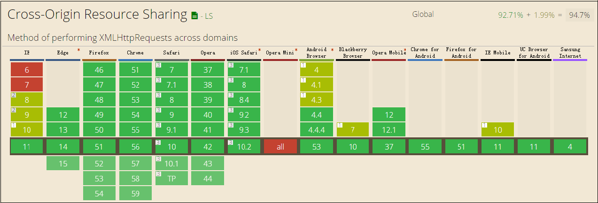
整个CORS通信过程，都是浏览器自动完成，不需要用户参与。对于开发者来说，CORS通信与同源的AJAX通信没有差别，代码完全一样。浏览器一旦发现AJAX请求跨源，就会自动添加一些附加的头信息，有时还会多出一次附加的请求，但用户不会有感觉。
因此，实现CORS通信的关键是服务器。只要服务器实现了CORS接口，就可以跨源通信。
什么情况下需要CORS？
- 由
XMLHttpRequest或Fetch发起的跨域 HTTP 请求。- Web 字体 (CSS 中通过
@font-face使用跨域字体资源)- 使用
drawImage将Images/video画面绘制到canvas
例如，当你引用了某个第三方CDN上的字体文件时：
1 | /* CSS */ |
如果该CDN服务商未正确设置Access-Control-Allow-Origin，那么浏览器无法加载字体资源。
两种请求
浏览器将CORS请求分成两类：简单请求（simple request）和非简单请求（not-so-simple request）。
若请求满足以下条件，则该请求属于简单请求：
- 请求方法是下列三种之一：
- GET
- POST
- HEAD
- HTTP的头信息不得包含以下几种字段之外的字段：
- Accept
- Accept-Language
- Content-Language
- Content-Type： 仅限于
text/plain、multipart/form-data、application/x-www-form-urlencoded三个值
凡是不同时满足上面两个条件，就属于非简单请求。
浏览器对这两种请求的处理，是不一样的。
简单请求
对于简单请求，浏览器直接发出CORS请求。具体来说，就是在头信息之中，增加一个Origin字段。
我们首先发起一个跨域请求：
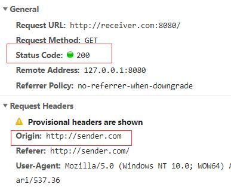
可以看到，浏览器自动在请求头部加了一个Origin字段，同时服务器返回的状态码也为200，但是在控制台我们可以看到这样一个CORS的报错：
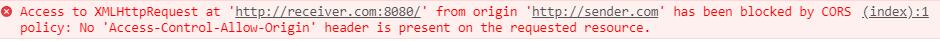
在服务器我们也能看到这样的记录：
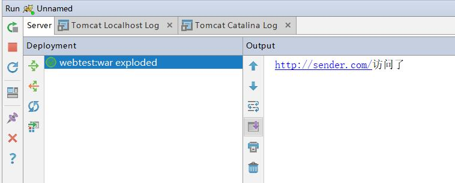
这个也说明了，跨域请求可以正常发起，但是返回结果被浏览器拦截了。
我们对服务器稍加修改，给其响应头部加上如下字段：
1 | Access-Control-Allow-Origin: http://sender.com |
此时我们再发起请求，就可以看到结果如下：
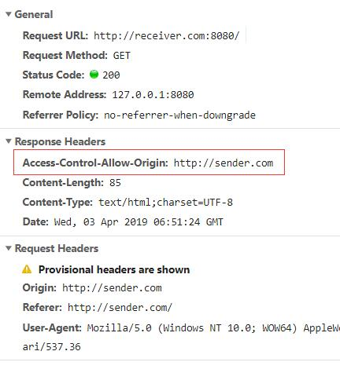
同时在控制台也没有了CORS的报错了。
总结一下，在发起一个简单请求时，浏览器如果发现这次请求是一个跨域AJAX请求时，就自动在头信息之中，添加一个Origin字段。Origin字段用来说明，本次请求来自哪个源（协议 + 域名 + 端口）。服务器根据这个值，决定是否同意这次请求。
如果Origin指定的源，不在许可范围内，服务器会返回一个正常的HTTP回应。浏览器发现，这个回应的头信息没有包含Access-Control-Allow-Origin字段或者这个字段的值中不包含这个Origin指定的源，就知道出错了，从而抛出一个错误，被XMLHttpRequest的onerror回调函数捕获。注意，这种错误无法通过状态码识别，因为HTTP回应的状态码有可能是200也有可能是其他，这个取决于服务器是否有做这方面的处理。比如，服务器对请求头中的Origin进行了判断后，可能给出诸如403等返回码如下：
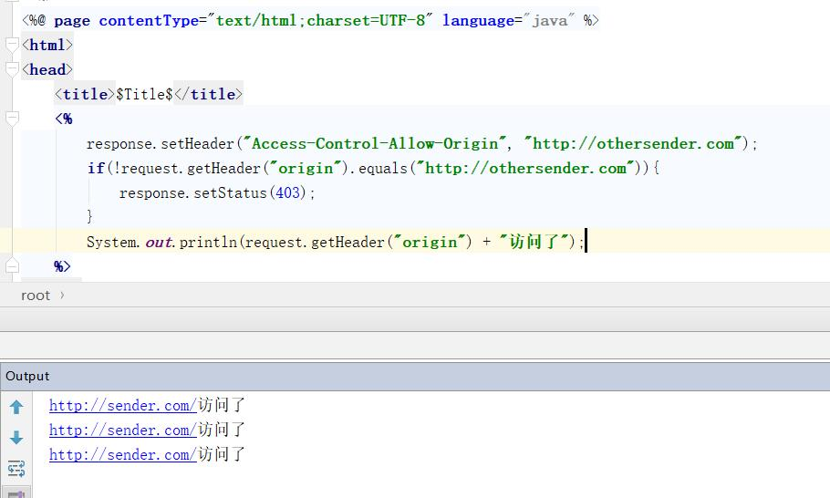
服务器对Origin字段判断后，返回了403，同样的请求得到了不同的响应结果（对比上图）：
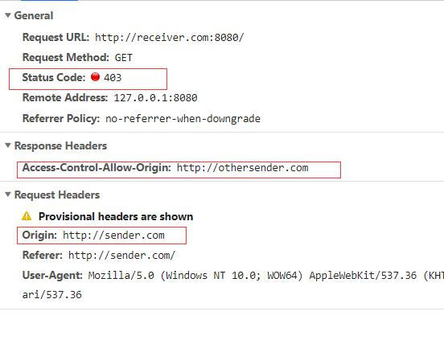
非简单请求
对于非简单请求，浏览器并不会立即执行对应的请求代码，而是会先发送一个被称为“预检”(Preflight)的OPTION请求，用于询问要被跨域访问的服务器，是否允许当前域名下的页面发送跨域的请求。
比如，使用下面的代码发起一个请求：
1 | var url = 'http://receiver.com/testNotSimpleReq.php'; |
这段代码中，HTTP请求的方法是PUT，并且发送一个自定义头信息X-Custom-Header。
浏览器发现这是一个非简单请求，就会先自动发起一个“预检”请求，要求服务器确认可以这样请求：
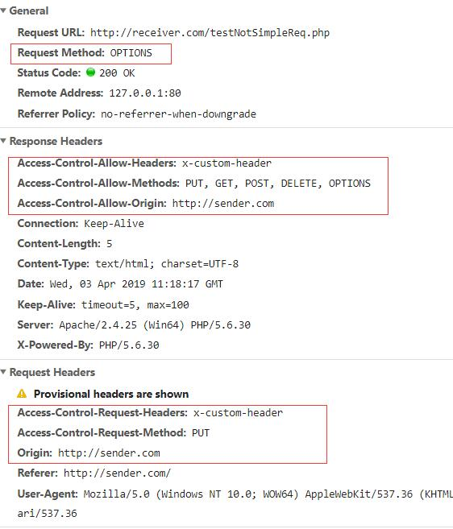
在请求头部中，关键字段是Origin，表示请求来自哪个源。
除了Origin字段，"预检"请求的头信息包括两个特殊字段。
Access-Control-Request-Method
该字段是必须的，用来列出浏览器的CORS请求会用到哪些HTTP方法，上例是PUT。Access-Control-Request-Headers
该字段是一个逗号分隔的字符串，指定浏览器CORS请求会额外发送的头信息字段，上例是X-Custom-Header。
在“预检”请求的响应头部中，出现了三个字段：
Access-Control-Allow-Origin
和前面一样，表示接受的域名Access-Control-Allow-Methods
逗号分隔的一个字符串，表明服务器支持的所有跨域请求的方法。注意，返回的是所有支持的方法，而不单是浏览器请求的那个方法。这是为了避免多次"预检"请求。Access-Control-Allow-Headers
如果浏览器请求包括Access-Control-Request-Headers字段，则Access-Control-Allow-Headers字段是必需的。它也是一个逗号分隔的字符串，表明服务器支持的所有头信息字段，不限于浏览器在"预检"中请求的字段。
如果请求方法或者请求中含有的自定义头部不在响应头部的Access-Control-Allow-Methods和Access-Control-Allow-Headers中，浏览器就不会真正发起该请求，同时在控制台报错如下：
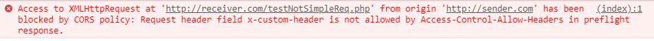
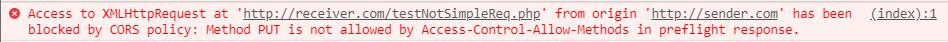
如果顺利通过“预检”的话，浏览器则会真正发起请求：
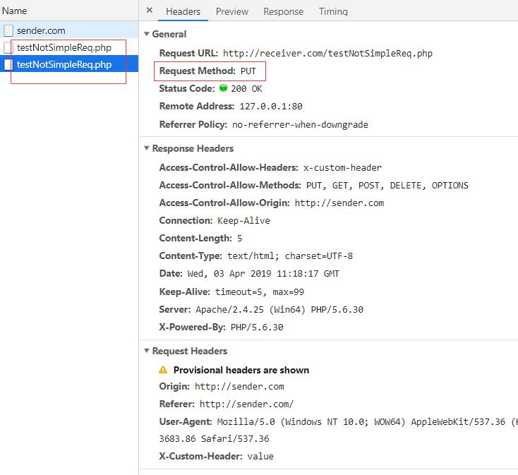
Cookies与CORS
默认情况下，Cookie不包括在CORS请求之中。
如果服务器允许请求中包含Cookies，则需要在响应头部中加入字段
1 | Access-Control-Allow-Credentials: true |
如果服务器不要浏览器发送Cookie，删除该字段或者设置为false即可。
另一方面，开发者必须在AJAX请求中打开withCredentials属性。
1 | var xhr = new XMLHttpRequest(); |
否则，即使服务器同意发送Cookie，浏览器也不会发送。或者，服务器要求设置Cookie，浏览器也不会处理。
但是，如果省略withCredentials设置，有的浏览器还是会一起发送Cookie。这时，可以显式关闭withCredentials。
1 | xhr.withCredentials = false; |
需要注意的是，如果要发送Cookie，Access-Control-Allow-Origin就不能设为星号，必须指定明确的、与请求网页一致的域名。
同时，Cookie依然遵循同源策略，只有用服务器域名设置的Cookie才会上传，其他域名的Cookie并不会上传，且跨域的原网页代码中的document.cookie也无法读取服务器域名下的Cookie。
与JSONP的比较
CORS与JSONP的使用目的相同，但是比JSONP更强大。
JSONP只支持GET请求，CORS支持所有类型的HTTP请求。
JSONP的优势在于支持老式浏览器，以及可以向不支持CORS的网站请求数据。